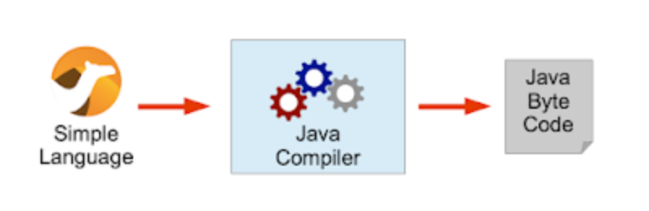
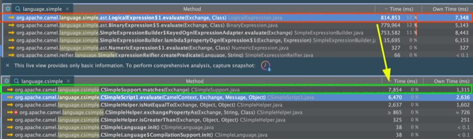

Apache Camel 3.7 LTS has just been released.
This is a LTS release which means we will provide patch releases for one year. The next planned LTS release is 3.10 scheduled towards summer 2021.
So what’s in this release
This release introduces a set of new features and noticeable improvements that we will cover in this blog post.
Pre compiled languages
We continued our avenue of making Camel faster and smaller. This time we focused on the built-in Simple scripting language.
First we added the jOOR language. jOOR is a small Java tool for performing runtime compilation of Java source code in-memory. It has some limitations but generally works well for small scripting code (requires Java 11 onwards).
Then we worked on compiled simple.
Compiled Simple
The csimple language is parsed into regular Java source code and compiled together with all the other source code, or compiled once during bootstrap via jOOR.
{kind=link}

In a nutshell, compiled simple language excels over simple language when using dynamic Object-Graph Navigation Language (OGNL) method calls.
For example profiling the following simple expression
<simple>${exchangeProperty.user.getName} != null && ${exchangeProperty.user.getAge} > 11</simple>
with the equivalent csimple expression:
<csimple>${exchangeProperty.user} != null &&
${exchangeProperty.user.getName()} != null &&
${exchangeProperty.user.getAge()} > 11</csimple>
yields a dramatic 100 times performance improvement in reduced cpu usage as shown in the screenshot:
{kind=link}

For more information about the compiled simple language and further break down of performance improvements then read Claus blog post.
We have provided two small examples that demonstrate csimple as pre compiled and as runtime compiled during bootstrap. You can find these two examples from the official Apache Camel examples repository at:
Optimized core
We have continued the effort to optimize camel-core. This time a number of smaller improvements in various areas such as replacing regular expressions with regular Java code when regular expressions were overkill (regexp take up sizeable heap memory).
The direct component has been enhanced to avoid synchronization when the producer calls the consumer.
We also enhanced the internals of the event notifier separating startup/stop events from routing events, gaining a small performance improvement during routing.
We also reduced the number of objects used during routing which reduced the memory usage.
Another significant win was to bulk together all the type converters from the core, into two classes (source generated). This avoids registering individually each type converter into the type converter registry which saves 20kb of heap memory.
If you are more curious about how we did these optimizations and with some performance numbers, then Claus wrote a blog post.
Optimized components startup
The camel core has been optimized in Camel 3 to be small, slim, and fast on startup. This benefits Camel Quarkus which can do built time optimizations that take advantage of the optimized camel core.
We have continued this effort in the Camel components where whenever possible initialization is moved ahead to an earlier phase during startup, that allows enhanced built time optimizations. As there are a lot of Camel components then this work will progress over the next couple of Camel releases.
Separating Model and EIP processors
In this release we untangled model, reifier and processors.
This is a great achievement which allows us to take this even further with design time vs runtime.
Model -> Reifier -> Processor
(startup) (startup) (runtime)
The model is the structure of the DSL which you can think of as design time specifying your Camel routes. The model is executed once during startup and via the reifier (factory) the runtime EIP processors is created. After this work is done, the model is essentially not needed anymore.
By separating this into different JARs (camel-core-model, camel-core-reifier, camel-core-processor) then we ensure they are separated and this allows us to better do built time optimizations and dead code elimination via Quarkus and/or GraalVM.
This brings up to lightweight mode.
Lightweight mode
We started an experiment earlier with a lightweight mode. With the separation of the model from the processors, then we have a great step forward, which allowed us to make the lightweight mode available for end users to turn on.
In lightweight mode Camel removes all references to the model after startup which causes the JVM to be able to garbage collect all model objects and unload classes, freeing up memory.
After this it’s no longer possible to dynamically add new Camel routes. The lightweight mode is intended for microservice/serverless architectures, with a closed world assumption.
Autowiring components
The Camel components is now capable of autowiring by type. For example the AWS2 SQS components can automatically lookup in the registry if there is a single instance of SqsClient, and then pre configure itself.
We have marked up in the Camel documentation which component options supports this by showing Autowired in bold in the description.
Salesforce fixes
Our recent Camel committer Jeremy Ross did great work to improve and fix bugs in the camel-salesforce component. We expect more to come from him.
VertX Kafka Component
A new Kafka component has been developed that uses the Vert.X Kafka Java Client which allows us to use all of its features, and also its robustness and stability.
The camel-vertx-kafka component is intended to be (more) feature complete with the existing camel-kafka component. We will continue this work for the next couple of Camel releases.
DataSonnet
The new camel-datasonnet component, is to be used for data transformation using the DataSonnet standard.
DataSonnet is an open source JSON-centric, template-based data transformation standard built to rival proprietary options available in the market.
Spring Boot
We have upgraded to Spring Boot 2.4.
New components
This release has a number of new components, data formats and languages:
- AtlasMap: Transforms the message using an AtlasMap transformation
- Kubernetes Custom Resources: Perform operations on Kubernetes Custom Resources and get notified on Deployment changes
- Vert.X Kafka: Sent and receive messages to/from an Apache Kafka broker using vert.x Kafka client
- JSON JSON-B: Marshal POJOs to JSON and back using JSON-B
- CSimple: Evaluate a compile simple expression language
- DataSonnet: To use DataSonnet scripts in Camel expressions or predicates
- jOOR: Evaluate a jOOR (Java compiled once at runtime) expression language
Upgrading
Make sure to read the upgrade guide if you are upgrading to this release from a previous Camel version.
More details
The previous LTS release was Camel 3.4. We have blog posts for what’s new in Camel 3.5 and Camel 3.6 you may want to read to cover all news between the two LTS releases.
Release Notes
You can find more information about this release in the release notes, with a list of JIRA tickets resolved in the release.